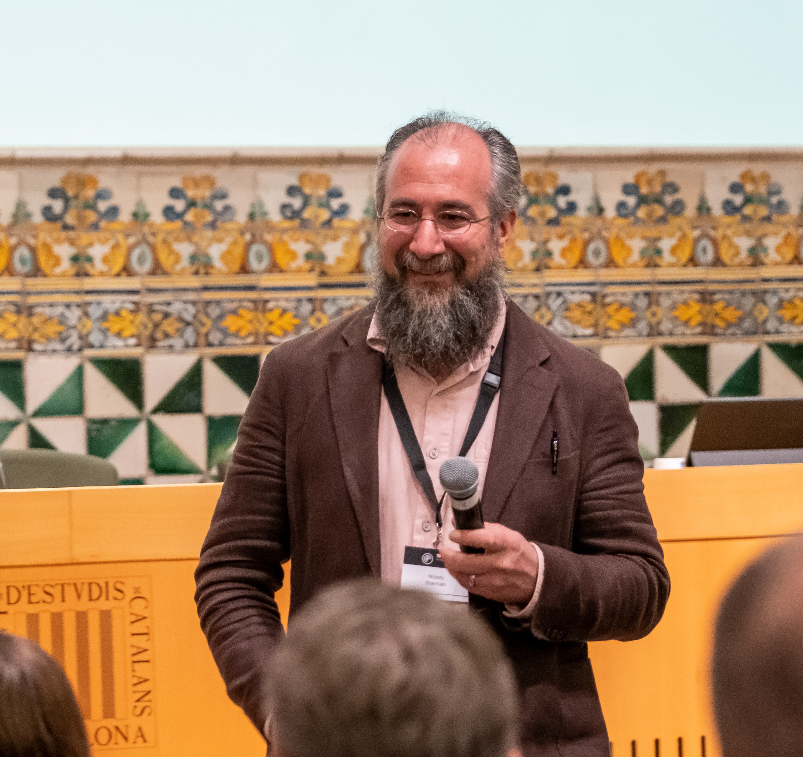

Speakers
Twelve researchers from academia and industry across four sessions
Annual Summit on Open-Source Co-Folding Methods
in Structural Biology & Drug Discovery
The CoFold Summit is an annual gathering of leading researchers advancing open-source computational structural biology.
Organized by the OpenFold Consortium and hosted by the Open Molecular Software Foundation (OMSF), the Summit brings together scientists from academia and industry to share the latest advances in co-folding methods, protein structure prediction, and AI-driven drug discovery.
The 2026 CoFold Summit featured four sessions spanning foundation models, property prediction, drug discovery applications, and emerging architectures — with expert panels and a networking reception in Barcelona.
Learn About OpenFoldPast, present, and future of open biomolecular AI
Predicting complexes of proteins, nucleic acids, and small molecules
Commitment to permissive licenses and reproducible research
AI-powered tools accelerating discovery of new medicines
Twelve researchers from academia and industry across four sessions
Expert-led discussions following each session’s talks



A discussion on the trajectory of open biomolecular foundation models and what the next generation of tools should look like.


How co-folding models are being extended to predict binding affinities, thermostability, and functional properties beyond 3D structure.


Practitioners from pharma and biotech discussing where co-folding tools are making a real impact in the drug discovery pipeline.


The next frontier: lighter architectures, multi-body complex prediction, and the convergence of structure prediction with protein design.

CoFold Summit — Barcelona, Spain — May 2026
| Time | Session / Talk | Speaker | Affiliation |
|---|---|---|---|
| Session 1 — Foundation Models: Past, Present, and Future | |||
| 9:00 am | Session Chair Welcome | Roope Soumalainen | AMD |
| 9:05 am | Talk | Adrian Stecula | Isomorphic Labs |
| 9:30 am | Talk | Saro Passaro | Boltz |
| 9:55 am | Talk | Mohammed AlQuraishi | OpenFold |
| 10:20 am | Panel Panel discussion with session speakers | Stecula · Passaro · AlQuraishi Moderated by Soumalainen |
|
| 10:40 am | Coffee Break | ||
| Session 2 — Beyond Structure: Predicting Affinity, Stability, and Other Properties | |||
| 11:00 am | Session Chair Welcome | Robin Röhm | Apheris |
| 11:05 am | Talk | Adam Lewis | SandboxAQ |
| 11:30 am | Talk | Fergus Imrie | University of Oxford |
| 11:55 am | Talk | Nate Gruver | Genesis Molecular AI |
| 12:20 pm | Panel Panel discussion with session speakers | Lewis · Imrie · Gruver Moderated by Röhm |
|
| 12:40 pm | Lunch | ||
| Session 3 — Drug Discovery Applications: Where the Technology Really Hits | |||
| 2:00 pm | Session Chair Welcome | Woody Sherman | Psivant Therapeutics |
| 2:05 pm | Talk | Matt Wellborn | Iambic Therapeutics |
| 2:25 pm | Talk | Victor Guallar | Nostrum Biodiscovery |
| 2:45 pm | Talk | Jose Carlos Gómez Tamayo | Janssen Pharmaceuticals |
| 3:25 pm | Panel Panel discussion with session speakers | Wellborn · Guallar · Gómez Tamayo Moderated by Sherman |
|
| 3:45 pm | Coffee Break | ||
| Session 4 — Emerging Models: More Efficient Models, Ternary Complexes, and Protein Design | |||
| 4:10 pm | Session Chair Welcome | Mallory Tollefson | OpenFold / OMSF |
| 4:15 pm | Talk | Daniele Grattarola | Proxima |
| 4:35 pm | Talk | Lifeng Qiao | IntelliFold |
| 4:55 pm | Talk | Robin Röhm | Apheris |
| 5:35 pm | Panel Panel discussion with session speakers | Grattarola · Qiao · Röhm · Clune Moderated by Tollefson |
|
| 6:00 pm |
Conference Reception — Light food & drinks Limbo · Plaça de Sant Agustí 3, 08001 Barcelona |
||
Moments from the CoFold Summit in Barcelona


The CoFold Summit is organized by the OpenFold Consortium, a project of the Open Molecular Software Foundation